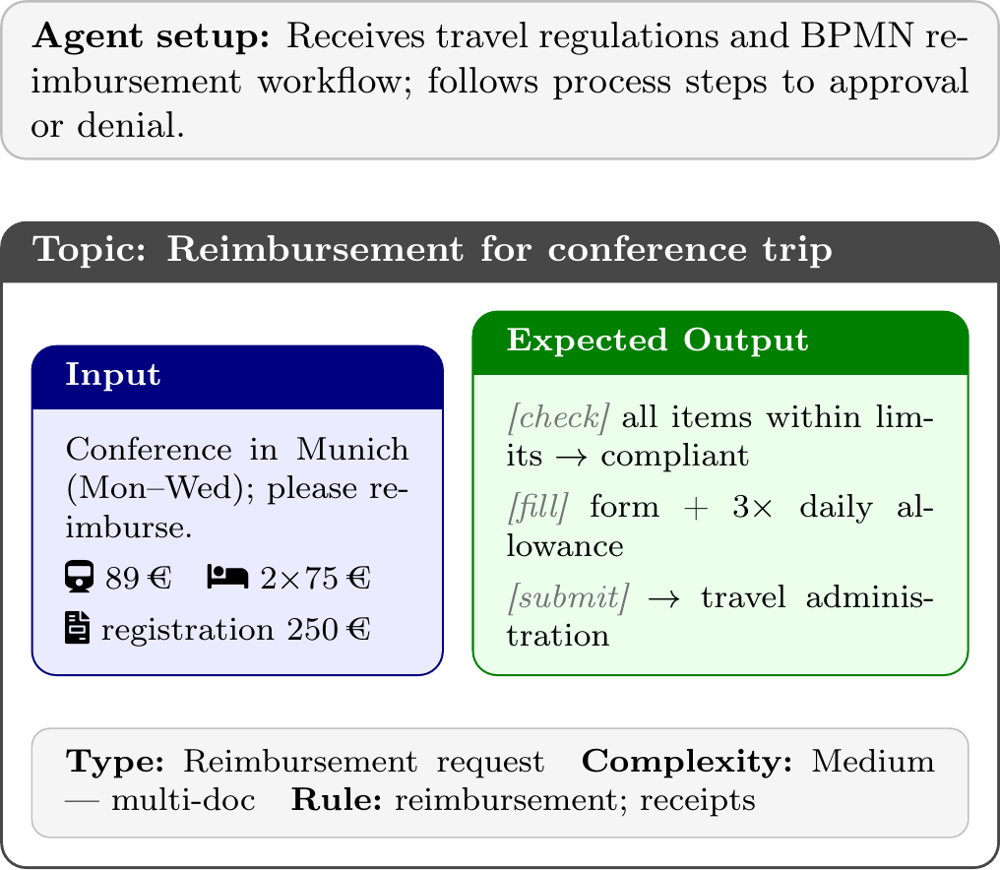

Agentic AI in University Administration
A shared task at the CIKM 2026 AnalytiCup, Rome, 8–11 November 2026.
Synopsis
Agentic AI systems combine large language models, information retrieval, planning, and tool use to act on behalf of users in complex digital environments. Yet their evaluation remains difficult for lack of reproducible, bounded laboratories. A university administration is a closed-world, socio-technical environment in which many tasks follow standardized, well-documented processes — making it particularly suited for a Cranfield-style evaluation of AI agents. The controlled, reproducible evaluation of agentic AI in such enterprise-like settings is an underexplored yet highly relevant problem.
This shared task offers the first reusable laboratory for the controlled evaluation of agentic AI in a university environment, namely the University of Kassel. Participants build agents that solve standardized administrative tasks (e.g., travel permits and reimbursements) by retrieving the relevant regulations, planning the necessary steps, and using a controlled set of tools, while complying with the institution's codes of conduct. The document collection is compiled together with the OpenWebSearch.eu project, which also provides search and retrieval endpoints.
Task
In its most generic form, the class of tasks we study can be described as follows:
Given a digital environment and a problem or task (the objective) that is typically tackled by a person acting in the environment, develop an intelligent agent that achieves the objective on the person's behalf by planning and executing the necessary steps in accordance with the environment's codes of conduct.
Topic areas
The first edition focuses on three administrative task areas:
- Business travel — travel permit requests, compliance checking (e.g., hotel rate limits, private extensions), and reimbursement processing. Topics are derived from labeled mail exchanges between administrative staff and university staff.
- Privately advanced costs — reimbursement of out-of-pocket expenses paid by university staff. The process is modeled as a BPMN workflow and provided to participants.
- Internal procurement — identification, selection, and ordering of goods through the university's procurement system, supported by a dedicated product-search tool for reproducibility.
Sub-tasks
To lower the barrier to entry, participants may address any of three sub-tasks, each taking the task description as input:
- Retrieval — retrieve documents relevant to the current state and task progress (focus on recall); output the run and a log of reasoning tokens.
- Simulation — generate a plan of action without executing it; output the plan, retrieved documents, and reasoning tokens.
- Solving — build a working agent that synthesizes a full solution; output the solution and a log of actions, retrieved documents, and reasoning tokens.
Example topic

Data & Tools
The environment comprises a document collection, a set of topics, and a controlled set of tools.
Document collection
Compiled by crawling the web pages of the University of Kassel and other sources together with the OpenWebSearch.eu project. A specialized sub-crawl is available for download, and the project provides pre-computed embeddings and a RAG API endpoint for participants who do not wish to index the collection themselves. First-edition tasks are selected to have sufficient English documentation.
Topics
We compile a collection of 50 topics across the three task areas above, drawing on the hands-on expertise of administrative staff trained in the University of Kassel's “AI FrAIdays” seminar series. Each topic consists of a user query (with any attached documents), an expected output following the prescribed process, and annotations for query type, complexity, and rule area.
Tools
Tool access is provided through one of the established AI agent protocols (e.g., MCP or A2A). The following tools are envisioned for the first edition:
- All task areas: RAG systems / chatbots indexing the relevant document collections (hosted at OpenWebSearch.eu) and a subset of internal documents; a mock mail backend for sending e-mails to fake addresses of the administrative staff; and any locally available tools participants choose to integrate via the prescribed agent protocol.
- Business travel and privately advanced costs: a BPMN endpoint exposing the modeled university workflows, and a mock interface to the university's SAP-based travel and reimbursement portal for filling in and submitting forms without touching the live system.
- Internal procurement: a RAG endpoint over the university's internal product catalog; where appropriate, public product catalogs may additionally be consulted via web-search tools.
Input / Output format
Input: a task description (a user request, optionally with attached documents). Output depends on the chosen sub-task and follows prescribed formats: retrieved documents in the TREC run format, action logs in a common protocol format, and reasoning tokens as plain text. Validation tools are provided.
Evaluation
Because solutions to standardized tasks can be checked against a reference, we combine manual and automatic evaluation. Each sub-task is scored on the same gold topics, with criteria matched to its required output:
- (1) Retrieval. Retrieved documents are judged against the set of sources needed to make progress on the task, using recall-oriented IR measures (Recall@k, MAP, nDCG). Recall is primary, since a missing regulation or form invalidates the downstream solution.
- (2) Simulation. The proposed plan is compared against the reference process (modeled, where available, as a BPMN workflow): we score the coverage and precision of the plan's steps, the correctness of their ordering, and whether the required decision points and documents are accounted for. The supporting retrieved documents are scored as in the Retrieval sub-task.
- (3) Solving. The synthesized solution is scored on task success — a binary criterion: the minimal solution accepted by peers (e.g., a reimbursement application with valid receipts) — and, among non-successful runs, on the number and severity of errors (rule violations, missing receipts, incorrect form fields), which enable a finer ranking. The agent behavior log additionally yields tool-use accuracy (precision/recall of tool calls) and retrieval quality, and a qualitative audit verifies the solution was reached for the right reasons rather than by chance.
Across all sub-tasks we also report efficiency measures: manual task-completion time (a trained-human baseline), runtime, and environmental impact, for which we investigate the TIREx tracker. Judges compare solutions against expert reference solutions, ideally via a diff visualization; trained laypeople suffice for most topics, with regulatory edge cases referred to domain experts. Automatic LLM-as-judge measures will be validated against the human reference-based judgments on a sample before being used to rank systems. The organizers carry out the necessary judgments and assessments.
Participation
Participation is open to research groups and individuals from IR, NLP, AI, and adjacent communities, as well as industry teams.
- Register your interest by e-mailing the organizers (see Contact); registration opens in July 2026.
- Form a team and choose one or more of the three sub-tasks (Retrieval, Simulation, Solving).
- Develop your agent against the released document collection, tools, and example topics. Tools are accessed via the prescribed AI agent protocol; you may integrate your own local tools.
- Submit your runs in the prescribed formats together with the agent behavior log. Validation tools are provided to check submission validity.
- Results and findings are presented at the CIKM 2026 AnalytiCup session; participating teams are invited to contribute to the overview paper.
Important Dates
| July 2026 | Launch; release of collection, tools, and example topics; registration opens. |
| August 2026 | Team formation deadline; training topics released. |
| Mid-October 2026 | Submission deadline for system runs. |
| Late October 2026 | Evaluation period (expert judgments and automatic measures). |
| Early November 2026 | Notification of results. |
| 8 November 2026 | Presentation at the CIKM 2026 AnalytiCup (main conference 9–11 November). |
Awards
Winning teams are recognized with certificates, a presentation slot at the CIKM 2026 AnalytiCup session, and a mention in the overview paper. We foresee no monetary prizes at this stage, though awards may be extended if sponsorship becomes available.
Results
Results will be announced after the evaluation period — see Important Dates.
Related Work
This task builds on and complements prior community evaluations:
- TREC Enterprise tracks (2005–2008). We revisit the enterprise setting with a more holistic aim: rather than retrieving information for a query, we automate achieving the objective, of which retrieval is a sub-task.
- TREC Million LLM track (2025–2026). Retrieving expert LLMs for specific tasks complements ours, as an agent may consult such an expert while executing its plan.
- TREC RAG track (2024–2026). A RAG response is a synthesized solution integrating retrieval, but does not include tool calling or richer environment interactions.
- TREC AutoJudge track (2026) and the CLEF evaluation labs (e.g., Touché, LongEval), with which integration and shared expertise are foreseen.
Task Committee


Contact
For questions about the task and to register your interest, contact the organizers at simon.ruth@uni-kassel.de and martin.potthast@uni-kassel.de.